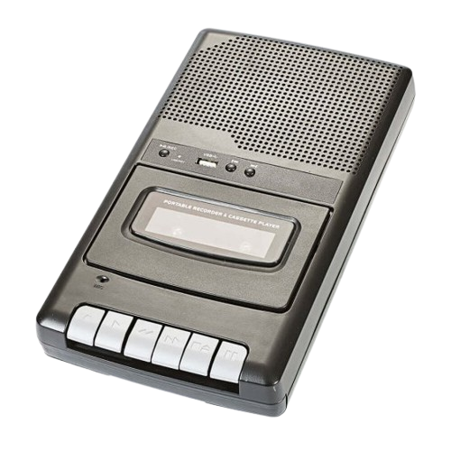

Nuestro material:
Los traductores de idiomas extraterrestre
utiliaran differentes objetos, por ejemplo el aclarador
permitira de aclarar las letras de su interlocutor y de convertir
las sonoritadas con nuestro alphabeto para una mayor
comprehension del interlocutor.
Mientras que el otro objeto, el micro-transmisor
permitira de comunicar a distancia, porque hay 2 luegos posible :
-A distancia
-Al contacto de los extraterrestre
El aclarador.

El micro-transmisor.